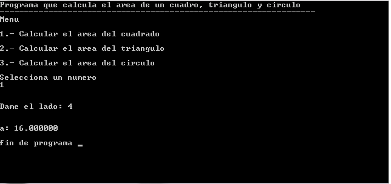
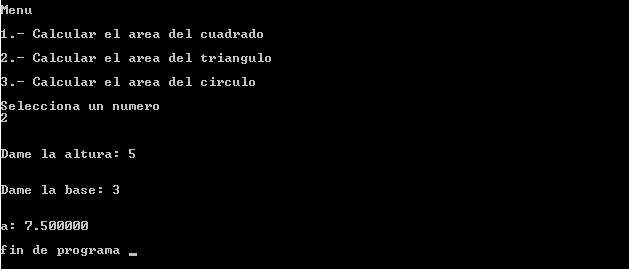

Se pretende que el programa tenga un menu con la funcion switch en el cual el usuario
podrá elegir el area que desea calcula, de no existir la opción que elige el usuario, marcará error
Pseudocódigo
ProcesoAreas
Escribir ("Menu");
Escribir ("1.- Calcular el area del cuadrado");
Escribir ("2.- Calcular el area del triangulo");
Escribir ("3.- Calcular el area del circulo");
Leer opc;
Segun(opc) Hacer
Opcion_1:
Escribir ("Dame el lado: ");
Leer l;
a = l * l;
Escribir ("f", a);
Opcion_2:
Escribir("Dame la altura: ");
Leer h;
Escribir("Dame la base: ");
Leer b;
a = (b * h) / 2;
Escribir ("f", a);
Opcion_3:
Escribir("Dame el radio: ");
Leer r;
pi = 3.1416;
a = pi * (r * r);
Escribir("f", a);
De otro modo:
Escribir("Opcion incorrecta");
Escribir ("Fin del programa");
Fin Proceso
Diagrama de Flujo
Código en Lenguaje C
Este programa muestra la suma de todos los numeros enteros pares que hay del 1-100.
#include<stdio.h>
int main()
{
int opc;
float a,l,b,h,r,pi;
printf("Menu\n\n");
printf("1.- Calcular el area del cuadrado\n\n");
printf("2.- Calcular el area del triangulo\n\n");
printf("3.- Calcular el area del circulo\n\n");
scanf("%d",&opc);
switch(opc)
{
case 1: printf("\n\nDame el lado: ");
scanf("%f",&l);
a=l*l;
printf("\n\na: %f ",a);
break;
case 2: printf("\n\nDame la altura: ");
scanf("%f",&h);
printf("\n\nDame la base: ");
scanf("%f",&b);
a=(b*h)/2;
printf("\n\na: %f ",a);
break;
case 3: printf("\n\nDame el radio: ");
scanf("%f",&r);
pi=3.1416;
a=pi*(r*r);
printf("\n\na: %f ",a);
break;
default: printf("\n\nopción incorrecta ");
break;
}
printf("\n\nfin de programa ");
getch();
return 0;
}
Salida del programa

